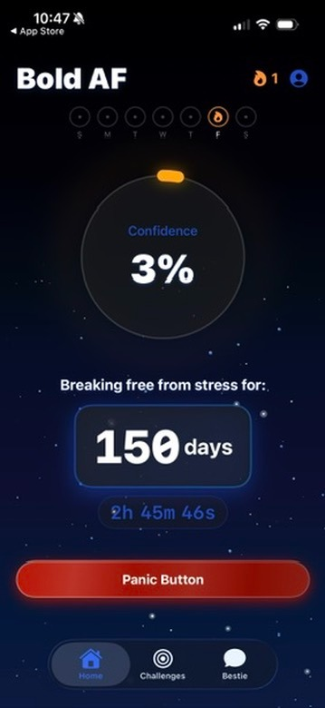
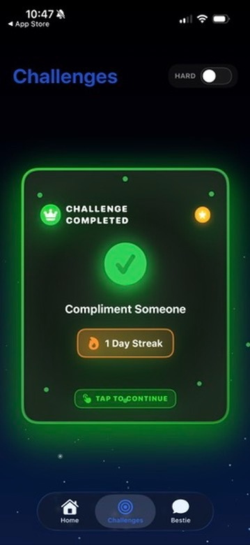
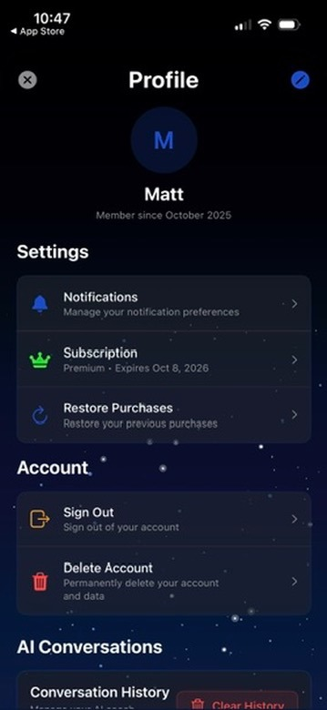

iOS app for building confidence through daily challenges and streak tracking. Users complete social challenges — compliment someone, start a conversation, try something uncomfortable — and track a running confidence score over time. Some users are at 150-day streaks.


